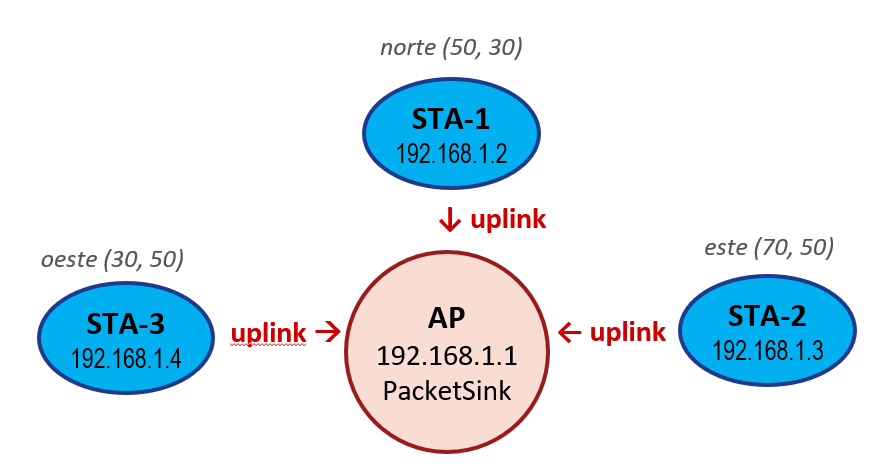

NS-3
WiFi Builder
// Taller de Simulación de Redes · Módulos 8 & 9
0 / 8
// topología de la simulación

wifi-basico.cc
// selecciona la línea correcta
Siguiente →
Omitir
🎉
¡Script completado!
Descarga tu archivo y pruébalo en NS-3
respuestas correctas
⬇ Descargar wifi-basico.cc
↺ Reiniciar
wifi-basico.cc — VISTA PREVIA EN VIVO